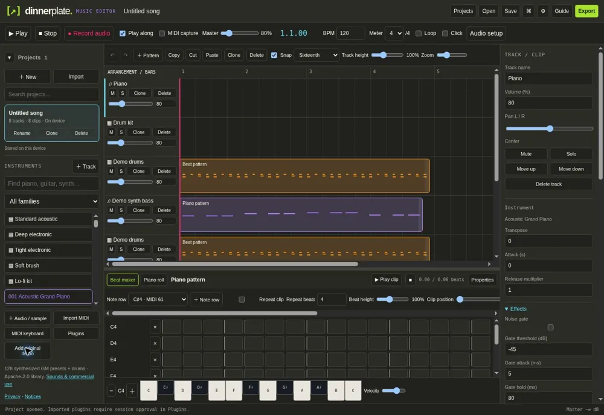
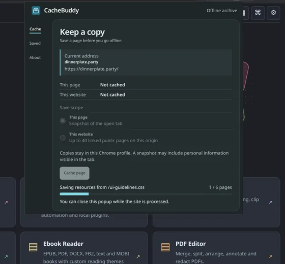
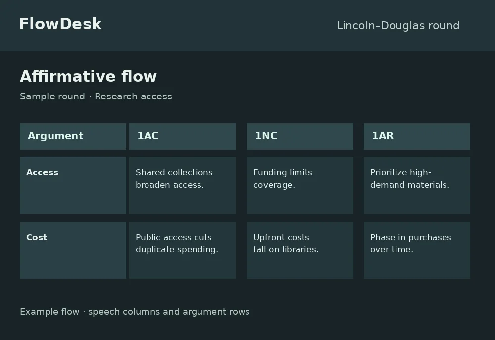

Dinnerplate.party
A local-first creative workspace with tools for photo, video, audio, and 3D. It brings editing and project storage into the browser and offers portable offline builds.

I build browser tools for creating, working offline, and keeping track of fast-moving ideas.
Explore My WorkA local-first creative workspace with tools for photo, video, audio, and 3D. It brings editing and project storage into the browser and offers portable offline builds.

A Chromium and Firefox extension that saves snapshots of individual pages or linked pages on a site. Saved copies stay in the browser profile and can be reopened offline.

A debate workspace for Lincoln–Douglas and Public Forum. Follow arguments across speeches, run speech and prep timers, and move rounds between devices using spreadsheet or JSON exports.

I’m Yap, an independent developer. I’m interested in how much a browser can do on its own, from editing media to keeping a page readable offline.
I build around real workflows. A project should be easy to reopen, export, or take to another device when you need it.
Find Me on GitHub